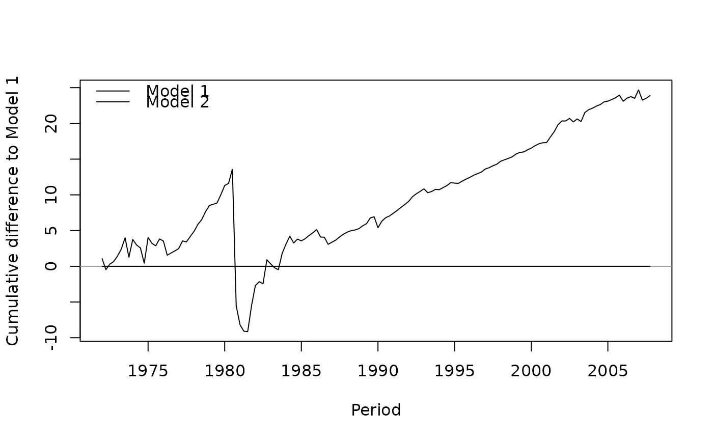

Plotting the Log Predictive Likelihood per Period
Source:R/plot_predictive_loglik.R
plot_predictive_loglik.RdPlots the log predictive density of each evaluated period for one or more Bayesian models, either period by period or as a running sum.
Usage
plot_predictive_loglik(
x,
baseline = NULL,
cumulative = TRUE,
col = "black",
lwd = 1,
lty = 1,
legend = TRUE,
legend_position = "topleft",
main = NULL,
xlab = "Period",
ylab = NULL,
...
)Arguments
- x
an object of class 'selcrit' or 'selcritlist' whose entries contain the log predictive likelihood, usually a result of a call to
selection_criteriaon expanding windows that carry the draws ofadd_predictive_loglik.- baseline
the model every other model is compared with, given as its position in
xor as its name. IfNULL(default), nothing is subtracted and the log predictive densities themselves are plotted.- cumulative
logical. Should the running sum over the periods be plotted (
TRUE, the default) rather than the value of each period?- col
a vector of colours, which is recycled over the models in
x.- lwd
a vector of line widths, which is recycled over the models in
x.- lty
a vector of line types, which is recycled over the models in
x.- legend
logical. Should a legend of the models be added?
- legend_position
the position of the legend, passed on to
legend. The default is"topleft", which a cumulative plot of differences often leaves free; where the lines rise into it,"bottomleft"or"right"usually does not.- main
the title of the plot. If
NULL(default), no title is added.- xlab
the label of the x-axis.
- ylab
the label of the y-axis. If
NULL(default), a label is chosen frombaselineandcumulative.- ...
further graphical parameters, which are passed on to
plot.
Details
The log predictive likelihood of a model is the sum of the log
predictive densities of the periods it was evaluated for, and
selection_criteria reports that sum with a band. This function
plots the terms of the sum, which answers a question the sum cannot: whether a
difference between two models is a steady advantage or the consequence of a
few periods. A single quarter can decide a comparison of this kind, and with
cumulative = TRUE such a quarter is a step in an otherwise flat line
rather than a number hidden in a total.
With a baseline the plot shows differences, the cumulative sum
of \(lpd_{t} - lpd_{t}^{baseline}\) over the evaluated periods, and a
horizontal reference line is drawn at zero. A line that ends above zero
belongs to a model that predicted better than the baseline over the whole
evaluation sample, and the slope at any point is how much better it was
predicting then. Differences are what the criterion is read in, so a baseline
is usually what is wanted as soon as there is more than one model; without one
the lines are dominated by the periods that were hard for every model alike.
The periods come from attribute "terms" of the LPL entry of each
model, which also holds the numerical standard error of each period. Models are
plotted over the periods they share with the baseline, and a model without an
LPL entry is left out with a warning.
See also
selection_criteria for the sum and its band,
add_predictive_loglik for the draws it is computed from, and
plot_forecast_errors_by_period for the same question asked of
forecast errors.
Examples
data("us_macrodata")
# Two specifications to compare
models <- create_bvarmodel(data = us_macrodata, p = 1:2,
deterministic = "const",
iterations = 100, burnin = 50)
models <- add_priors(models,
coef = list(v_i = 1, v_i_det = 1 / 10),
sigma = list(df = 3, scale = 1))
# One window per evaluated period
windows <- lapply(models, use_expanding_window, start = c(1972, 1))
criteria <- lapply(windows, function(w) {
w <- add_initial_values(w)
w <- add_posterior_coefficients(w)
w <- add_predictive_loglik(w)
selection_criteria(w)
})
class(criteria) <- append("selcritlist", class(criteria))
plot_predictive_loglik(criteria, baseline = 1)
